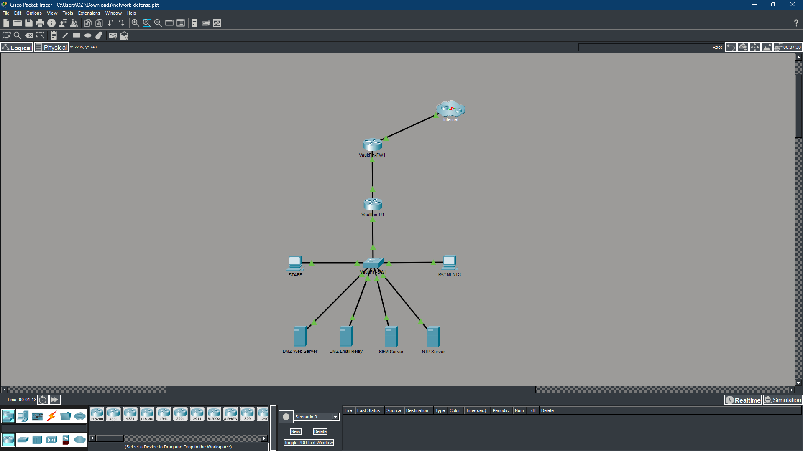

CLIENT BRIEF
cat objectives.txt
cat tools.txt
| TOOL / TECHNOLOGY | PURPOSE |
|---|
cat skills.txt
cat topology.txt
INTERNET (untrusted / WAN)
|
[VaultFin-FW1] G0/1 - OUTSIDE zone
|
[VaultFin-R1] G0/0 - INSIDE zone (trunk to SW1)
| Gi0/2 - DMZ zone
|
[VaultFin-SW1]
| | | |
VLAN 10 VLAN 20 VLAN 30 VLAN 99
STAFF PAYMENTS DMZ MGMT
.10.0/24 .20.0/24 .30.0/24 .99.0/24
[CLOUD] - Customer portal (PaaS, TLS 1.3, AES-256 at rest)
[SIEM] - 192.168.99.20 (syslog, SNMPv3, NetFlow collector)
[NTP] - 192.168.99.10 (internal NTP server)
| DEVICE | INTERFACE | IP ADDRESS | SUBNET MASK | ZONE / VLAN |
|---|---|---|---|---|
| VaultFin-FW1 | G0/0 | Connected to R1 | — | INSIDE |
| VaultFin-FW1 | G0/1 | WAN / ISP | — | OUTSIDE |
| VaultFin-R1 | G0/0.30 | 192.168.30.1 | 255.255.255.0 | DMZ |
| VaultFin-R1 | G0/0.10 | 192.168.10.1 | 255.255.255.0 | VLAN 10 — STAFF |
| VaultFin-R1 | G0/0.20 | 192.168.20.1 | 255.255.255.0 | VLAN 20 — PAYMENTS |
| VaultFin-R1 | G0/0.99 | 192.168.99.1 | 255.255.255.0 | VLAN 99 — MGMT |
| VaultFin-SW1 | Trunk | — | — | VLANs 10, 20, 99 |
| DMZ Web Server | NIC | 192.168.30.10 | 255.255.255.0 | VLAN 30 — DMZ |
| DMZ Email Relay | NIC | 192.168.30.20 | 255.255.255.0 | VLAN 30 — DMZ |
| SIEM Server | NIC | 192.168.99.20 | 255.255.255.0 | VLAN 99 — MGMT |
| NTP Server | NIC | 192.168.99.10 | 255.255.255.0 | VLAN 99 — MGMT |
cat methodology.txt
cat results.txt
ls ./evidence/

VaultFi Services Network Topology In Packet Tracer
cat lessons_learned.txt